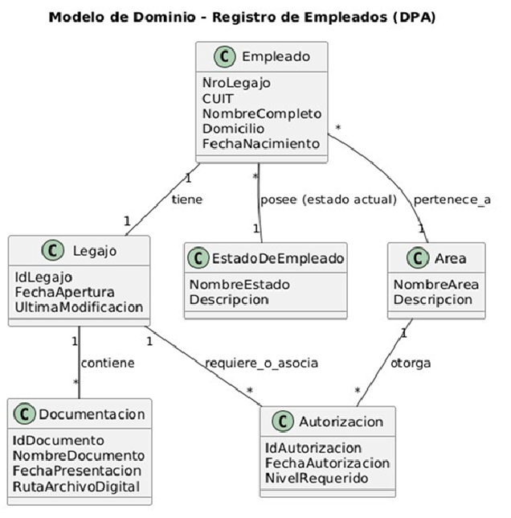
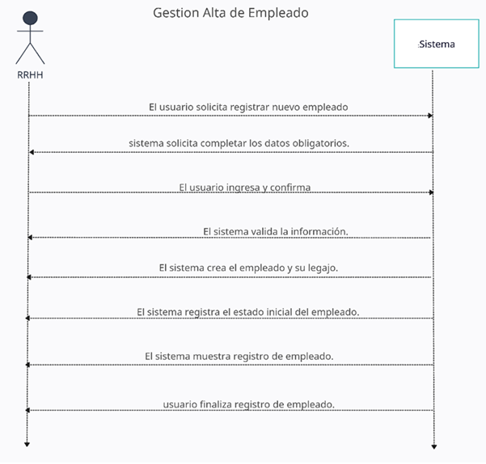
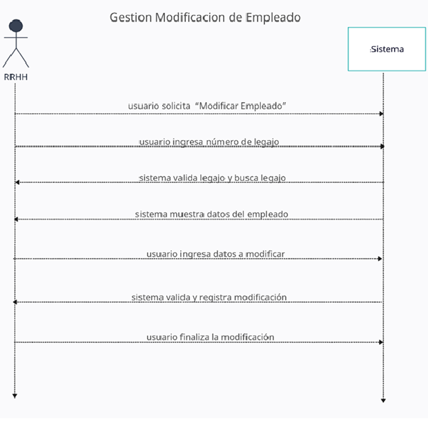
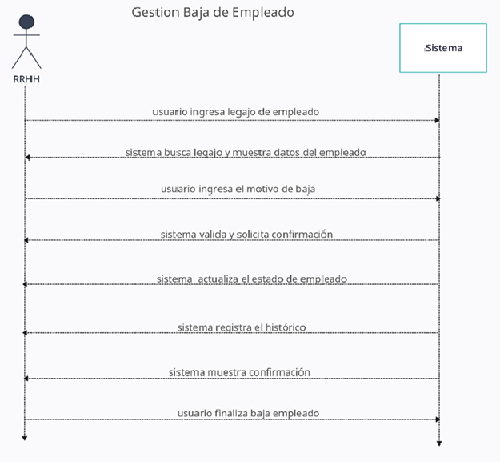
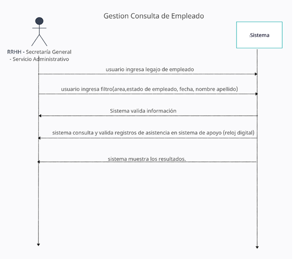
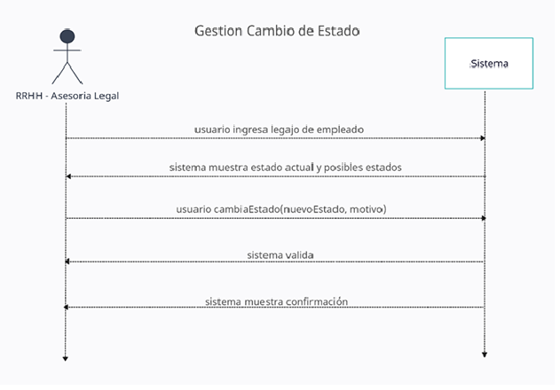
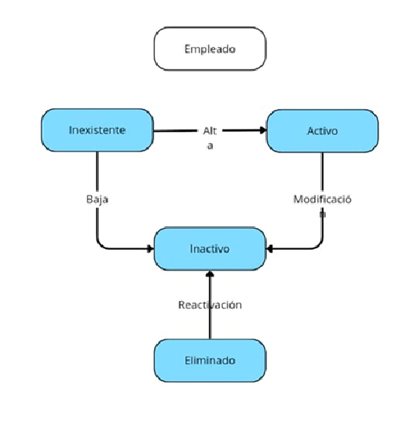
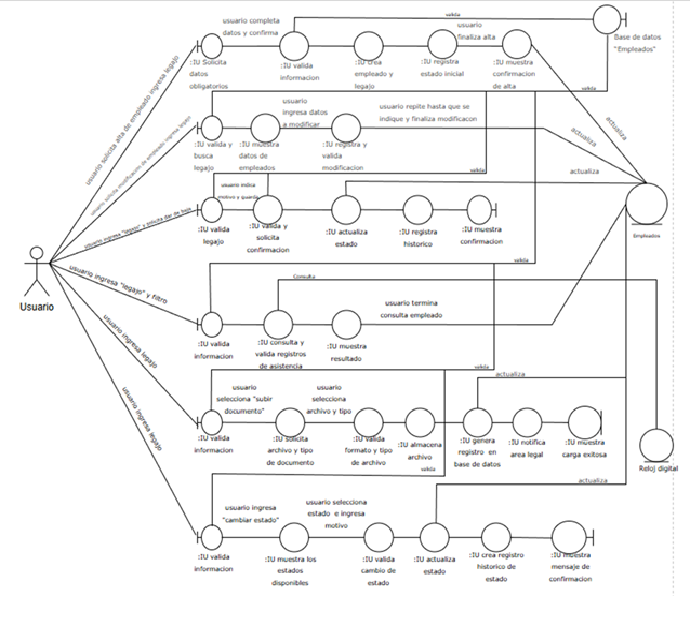

Metodología del Proceso Unificado
Modelo de Caso de Uso
Caso de uso 01: Alta de Empleado
A continuación se listan las funcionalidades técnicas críticas detectadas durante el relevamiento:
Actores:
- Empleado del Área RRHH (actor principal)
Precondiciones
- El usuario debe haber iniciado sesión en el sistema
Postcondiciones
- Se registra un nuevo empleado en el sistema.
- Se genera automáticamente su Legajo asociado.
- Se registra el estado inicial del empleado (Activo o En Revisión).
- Se guarda una entrada en el HistoricoEstado.
Escenario Principal de Éxito:
- 1. El usuario solicita “Alta de empleado”.
- 2. El sistema solicita completar los datos obligatorios.
- 3. El usuario completa y confirma
- 4. El sistema valida la información.
- 5. El sistema crea el empleado y su legajo.
- 6. El sistema registra el estado inicial.
- 7. El sistema muestra confirmación de alta.
- 8. usuario finaliza alta de empleado.
Extensiones (Flujos Alternativos):
- *a. El sistema falla
- 1. El empleado reinicia el sistema.
- 2. El sistema vuelve al paso 1.
- 3a.Falta un dato obligatorio
- 1. El sistema solicita completarlo.
- 2. Continuar en paso 2.
- 4a. DNI duplicado
- 1. El sistema cancela el alta y muestra advertencia.
- Requisitos Especiales:
- 1. Validación estricta de unicidad de DNI.
- 2. Reglas de formato para email, teléfono, fecha de ingreso.
- Lista de tecnología:
- • Sistema Web:(arquitectura cliente–servidor)
- • Backend: Java + Spring Boot
- • Frontend: HTML5 / React (si aplica)
- • Base de Datos: MariaDB / SQL
- • Servidor Interno DPA (red y seguridad)
- • Control de Acceso: OAuth2 + JWT
- • Sistema de asistencia: Reloj biométrico externo (huella / tarjeta)
Caso de uso 02: Modificación de Empleado
Actores:
- Empleado del Área RRHH (actor principal)
Precondiciones
- El empleado debe existir.
- Usuario con permisos de modificación.
Postcondiciones
- Los datos se actualizan y se registran
Escenario Principal de Éxito:
- 1. El usuario solicita modificar datos del empleado
- 2. el usuario ingresa número de legajo
- 3. el sistema valida legajo y busca legajo
- 4. el sistema muestra datos del empleado
- 5. usuario ingresa datos a modificar
- 6. el sistema valida y registra modificación
- 7. el usuario finaliza la modificación
Extensiones (Flujos Alternativos):
- *a. El sistema falla
- 1. El empleado reinicia el sistema.
- 2. El sistema vuelve al paso 1.
- 3d.Dato restringido
- 1. El sistema informa que el dato no puede modificarse.
- 4a. Validación fallida
- 1. El sistema informa el error.
- Requisitos Especiales:
- 1. Toda modificación queda auditada.
Caso de uso 03: Baja de Empleado
Actores:
- Empleado del Área RRHH (actor principal)
Precondiciones
- El empleado debe estar en estado Activo o Baja Temporal.
- Usuario con permisos para dar bajas.
Postcondiciones
- El empleado pasa a estado Baja Definitiva o Baja Temporal (según motivo).
- Se registra el cambio en el histórico.
- El legajo queda bloqueado para nuevas modificaciones salvo consulta.
Escenario Principal de Éxito:
- 1. El usuario ingresa legajo de empleado
- 2. El sistema busca legajo y muestra datos del empleado
- 3. El usuario ingresa el motivo de baja
- 4. El sistema valida y solicita confirmación.
- 5. El sistema actualiza el estado de empleado
- 6. El sistema registra el histórico.
- 7. El sistema muestra confirmación.
- 8. El usuario finaliza baja empleado
Extensiones (Flujos Alternativos):
- *a. El sistema falla
- 1. El empleado reinicia el sistema.
- 2. El sistema vuelve al paso 1.
- 3a. Motivo incompleto
- 1. El sistema solicita completarlo.
- 4b. Cancelación del usuario
- 1. El sistema vuelve a la pantalla anterior.
- Requisitos Especiales:
- 1. Política de retención documental: conservar registro por 5 años.
Caso de uso 04: Consulta
Actores:
- Empleado del Área RRHH
- Secretaría General
- Servicio Administrativo
Precondiciones
- Deben existir registros de asistencia previamente sincronizados con el sistema de reloj.
- Usuario autenticado.
Postcondiciones
- No se modifica información; solo se visualizan registros.
Escenario Principal de Éxito:
- 1. El usuario ingresa “Legajo” de empleado
- 2. El usuario ingresa filtro(area,estado de empleado, fecha, nombre apellido)
- 3. Sistema valida información
- 4. El sistema consulta y valida registros de asistencia en sistema de apoyo (reloj digital)
- 5. El sistema muestra los resultados.
Extensiones (Flujos Alternativos):
- *a. El sistema falla
- 1. El empleado reinicia el sistema.
- 2. El sistema vuelve al paso 1.
- 3a. No hay datos según filtros
- 1. El sistema muestra “Sin resultados”.
- 3b. Fallo de sincronización con el reloj
- 1. El sistema muestra alerta
- Requisitos Especiales:
- 1. Los datos de asistencia solo pueden ser consultados, nunca editados.
- 1. Debe manejar horarios nocturnos, doble turno, feriados y tolerancias.
Caso de uso 05: Carga de Documento
Actores:
- Empleado del Área RRHH
- Servicio Administrativo
Precondiciones
- El empleado debe existir.
- El archivo debe ser válido en extensión y tamaño.
- El usuario debe estar autenticado y tener permisos de carga.
Postcondiciones
- Se almacena el archivo en el sistema.
- Se registra un nuevo documento asociado.
- Si corresponde, se notifica a Asesoría Legal.
- • Se conserva el versionado documental (si el tipo de documento ya existía).
Escenario Principal de Éxito:
- 1. El usuario ingresa “Legajo” de empleado
- 2. El sistema valida información
- 3. El usuario selecciona “Carga de documentación”.
- 4. El usuario Selecciona tipo de documento.
- 5. El usuario Adjunta archivo.
- 6. El sistema valida tamaño y formato
- 7. El sistema guarda el archivo.
- 8. El sistema registra la carga
- 9. El sistema muestra confirmación.
Extensiones (Flujos Alternativos):
- *a. El sistema falla
- 1. El empleado reinicia el sistema.
- 2. El sistema vuelve al paso 1.
- 2a. Tipo no permitido
- 1. El sistema solicita elegir un tipo válido.
- 3a. Archivo corrupto o excedido
- 1. El sistema informa el error.
- Notas:
- 1. Debe conservarse el historial de versiones de un documento si ya existía uno del mismo tipo.
- 2. El nombre del archivo no debe contener caracteres inválidos.
- 3. • Se debe registrar el usuario que realizó la carga.
Caso de uso 06: Cambio de Estado
Actores:
- Empleado del Área RRHH
- • Asesoría Legal
Precondiciones
- El empleado debe existir.
- El usuario debe estar autorizado
Postcondiciones
- El estado del empleado se actualiza.
- El estado del empleado se actualiza.
Escenario Principal de Éxito:
- 1. El usuario ingresa “Legajo”
- 2. El sistema muestra estado actual y posibles estados.
- 3. El usuario cambiaEstado(nuevoEstado, motivo).
- 4. El sistema valida.
- 5. El sistema registra el cambio.
- 6. El sistema muestra confirmación.
Extensiones (Flujos Alternativos):
- *a. El sistema falla
- 1. El empleado reinicia el sistema.
- 2. El sistema vuelve al paso 1.
- 3a. Estado incompatible
- 1. El sistema informa que no puede aplicarse.
- 2. Continúa en paso 2.
- 3b. Motivo incompleto
- 1. El sistema solicita completarlo.
- 2. Continúa en paso 3.
- Notas:
- 1. El reloj NO interviene en este flujo.
- Transiciones automáticas NO forman parte de este caso (solo manual).
Fase de Elaboración
Diagrama de Casos de Uso

Modelo de Dominio

Diagrama de Secuencias






Contratos
Contrato CONT01 – Crear Empleado (Alta)
Operación:
- ingresarEmpleado(datosEmpleado)
Responsabilidad básica:
- Crear nuevo empleado, generar legajo y registrar estado inicial.
Entradas:
- datosEmpleado: nombre, apellido, DNI, área, fechaIngreso, estadoInicial
Salidas:
- Confirmación de alta
- Empleado creado
- Legajo generado
Precondiciones:
- Usuario autenticado
- DNI no existente
Postcondiciones:
- Se crea el empleado
- Se genera el legajo
- Se registra estado inicial
- Se registra histórico
Contrato CONT02 – Modificar Empleado
Operación:
- modificarEmpleado(legajo, dato, nuevoValor)
Responsabilidad básica:
- Actualizar información del empleado.
Entradas:
- legajo
- dato a modificar
- nuevoValor
Salidas:
- Confirmación de modificación
Precondiciones:
- Empleado existe
- Usuario autorizado
Postcondiciones:
- Se actualiza el dato
- Se registra histórico
Contrato CONT03 – Baja de Empleado
Operación:
- darBajaEmpleado(legajo, motivo)
Responsabilidad básica:
- Registrar baja definitiva o temporal del empleado.
Entradas:
- legajo
- motivo
Salidas:
- • Confirmación de baja
Precondiciones:
- Empleado activo o en baja temporal
- Usuario autorizado
Postcondiciones:
- Estado actualizado
- Legajo bloqueado
- Histórico actualizado
Contrato CONT04 – Consultar Asistencia
Operación:
- consultarAsistencia(filtros)
Responsabilidad básica:
- Filtrar registros de asistencia y mostrarlos.
Entradas:
- filtros (legajo, área, estado, fecha, nombre/apellido)
Salidas:
- Lista de registros de asistencia coincidentes
Precondiciones:
- Usuario autenticado
- Registros existentes
Postcondiciones:
- No modifica datos
Contrato CONT05 – Cargar Documento
Operación:
- cargarDocumento(legajo, tipoDocumento, archivo)
Responsabilidad básica:
- Validar y almacenar un documento asociado al empleado.
Entradas:
- legajo
- tipoDocumento
- archivo
Salidas:
- Confirmación de carga
Precondiciones:
- Empleado existe
- Archivo válido
Postcondiciones:
- Archivo almacenado
- Documento registrado
- Versionado preservado (si existe documento previo)
Contrato CONT06 – Cambio de Estado
Operación:
- cambiarEstado(legajo, nuevoEstado, motivo)
Responsabilidad básica:
- Actualizar el estado del empleado.
Entradas:
- legajo
- nuevoEstado
- motivo
Salidas:
- Confirmación de cambio
Precondiciones:
- Empleado existe
- Usuario autorizado
Postcondiciones:
- Estado actualizado
- Histórico registrado
Diagrama de Transición de Estados

Modelo de Analisis

3. Conclusiones Preliminares
Con base en lo expuesto, se concluye que la arquitectura propuesta satisface los requerimientos no funcionales de escalabilidad y seguridad solicitados por el cliente.
* Este documento está sujeto a revisiones y cambios por parte de la cátedra hasta la fecha de entrega final.